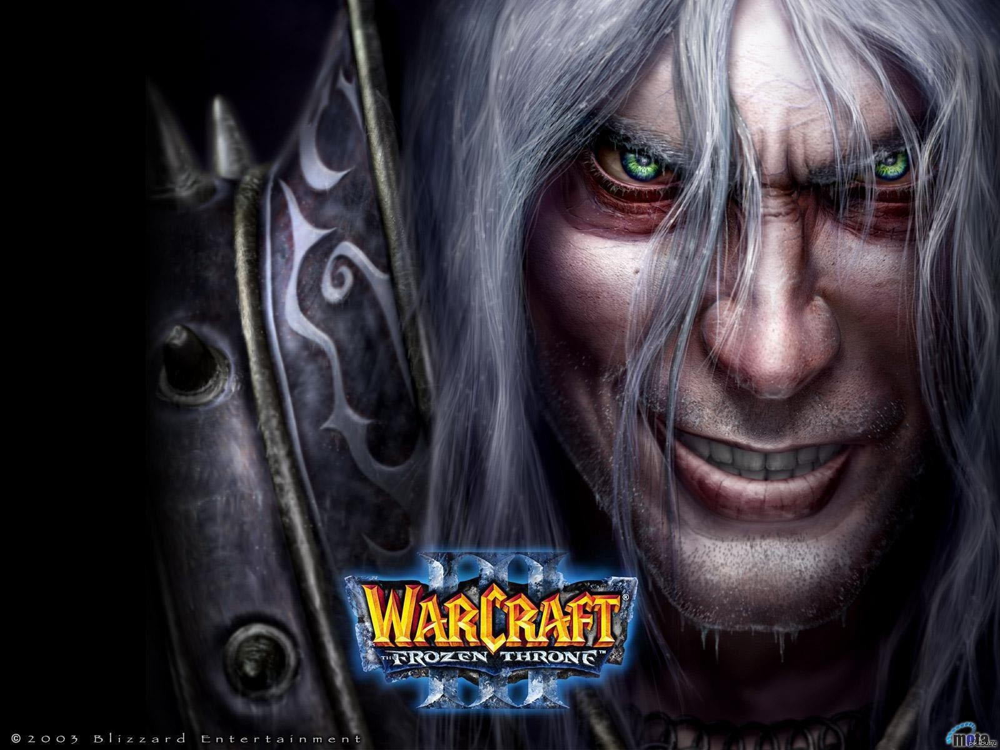
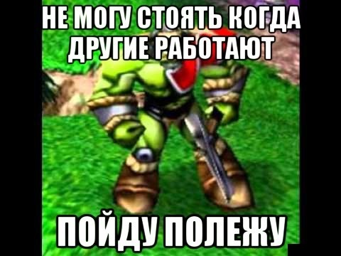
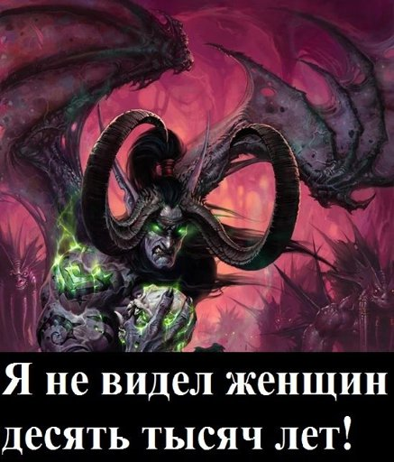
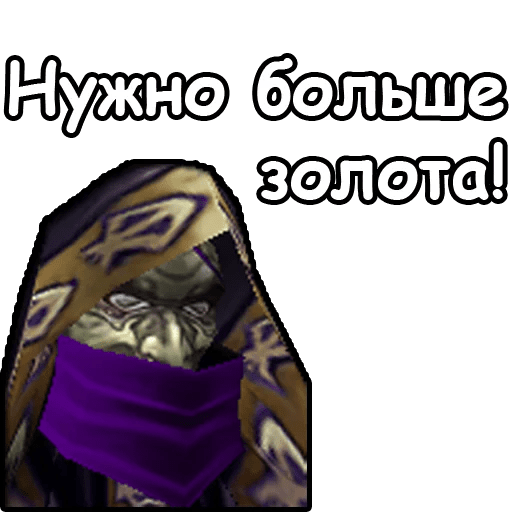
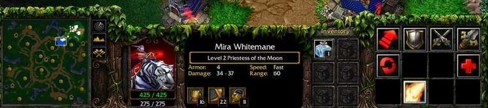
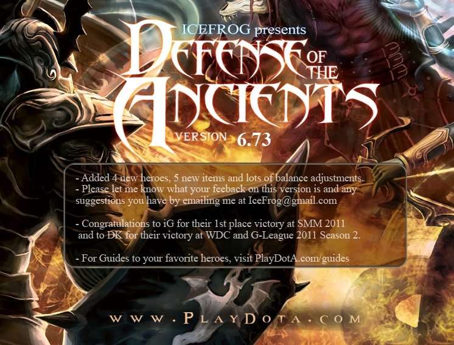

Warcraft 3 моё (быстро пролетевшее) детство

Одна из немногих игр что запомнилась мне по сей день.
Раньше ещё когда небыло интернета, приходилось брать диски у друзей перезаписивать
на свои и устанавливать на свой пк. Так и появилась игра на рабочем столе.
Впервые я заметил как мой брат играет. Я с увлечением смотрел как в очередной раз разгораетса битва
орков и людей или ночных эльфов и нежити.
К этой игре я пришол со временем я не сразу понимал как играть в эту игру.
Честно нада признатса одним из увлекательных занятий было закликивание фигурки юнитов,
и они выдавали прикольные фразы что в итоге стали легендарными
интернет мемами подобного рода:



Все эти фразы :"
Я не видел женщин уже десять тысяч лет!",
"
Такой уж я. Зла не помню. Приходится записывать.","
Нам нужен мир. Желательно весь.",
"
Любое утверждение ложно. Это — тоже!".
Всё это впечаталось в моей памяти и постепенно погружался в этот огромный мир военного ремесла.
Жанровая принадлежность
Warcraft 3 Reign of Chaos из дополнением
The Frothen Thron - культовая игра.
Зделана была в те времена, когда под крылом Blizzard Entertainment выпускали отличные продукты,
а
не очередное дополнение для ММО World of Warcraft и никаких новых проектов.
Всё таки не очень люблю такие проэкты.
Что касаетса самой игры это в первую очередь
RTS но от похожих ей собратьев отличает некоторые
RPG
элементы.
Это проявляетса в том что главного героя можна прокачать:
- повысить уровень,
- прокачать способность,
- найти артифакт и одеть на своего героя тем самым повысить его характеристики.
Это можно разгледеть на примере этой картинки:

В остальном это чистокровный RTS , игроку нужно строить свою базу, нанимать войска и их улутчать.
Из особеностей также можно выделить ограничение на выдиление войск в 1 групу на 12 человек,
что побуждает создавать дополнительные контрольные групы.
Сюжет
В отличии от других
RTS где за каждую рассу своя компания и конец тоже отличаетса,
в Warcraft 3 сюжет один. С разных лиц раскриваютса основные события этой вселенной.
Начинаеста всё с вторжением Пылающого легиона и борьба Альянса з чумой.
Так же по завершению одной из веток компании показывали ролик связан с этой рассой, который очень сильно впечетлял на то время.
World Editor
Последний в очереде но не по значению. World Editor - програма которая позволяла игроку создавать:
свои собственные карты, катсцены, юнитов, изменять их параметры и тд.
Благодаря этой програме и появилась легендарная карта DOTA.

Ода из тех карт в которых мы с братом сидели часами по локальной сети.
В последствии переросла в одну из самых популярных игр - DOTA 2.
Я всё таки люблю 1 доту, и сечас время от времени развлекаюсь на руской версии v6.70 AI.
Warcraft 3 - сегодня
Что сегодня сказать про неё это то что стала довольно таки популярной киберспортивной дисциплиной в Китае.
По сей день проводятса онлайн турниры (из-за карантина).
В 2019 году чемпионом мира стал руский игрок Happy.
Это одни из тех матчей от которых не возможно оторватса и тоже время от времени пересматриваю.
В 2020 году вышел Warcraft 3 Reforged .
Ремастер должен был вновь повысить популярность игры путьом обновление графики и перересовки всех катсцен.
К сожелению выход не увенчался успехом из-за плохого технического качества,
небыло проведено никаких работ над катсценами, изменили русскою озвучку на более худшую.
И также убрали оригинальную игру из маназина Battle.net.
Из-за этого тем хто не купил приходилось всё равно скачивать лишние 30гб.
Сечас 2021 год - ошибок над игрой не было исправлено до сих пор, даже нету никаких новостей после Blizzcon 2021.
Но есть и хорошая новость анонсировали Diablo II: Resurrected . Остаётса только ждать.
Что ж огромное спасибо что посмотрели даную статтю.